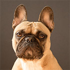
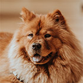
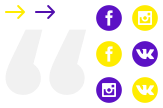
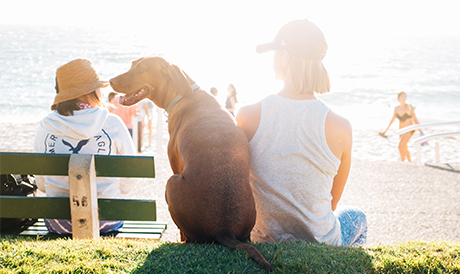

Питомник породистых животных рядом
с вашим домом
Животные как дети - им нужны мы.
О питомнике
Наш питомник - не просто дом для животных, а семья из разных пород собак и кошек.

- Лучшие представители своей породы
- Сбалансированный рацион питания питомца
- Ежедневный уход и тренировки
- Веселье, свежий воздух и отличная компания
Наши породы
-
Французский бульдог
Идеальный вариант городской собаки - они входят в тройку самых популярных собак на планете. Любят короткие прогулки и хорошо поспать.
посмотреть щенков -
Золотистый ретривер

Добродушные, ориентированные на людей собаки. Они отлично ведут себя с детьми и больными. Могут быть повадырями.
посмотреть щенков -
Чау-чау
Эти собаки с характером. Они всегда серьёзны, но временами проявляют характер.
посмотреть щенков -
Пудель

Активные и компанейские собаки. Любят много гулять, обладают отличным чувством юмора.
посмотреть щенков
Отзывы хозяев
Татьяна зверева
Хочу выразить большую благодарность Вам за это чудо - малыша, который появился у нас в семье. Деликатный, милый, ласковый и нежный белоснежный Уник, в которого я влюбилась с первого взгляда, увидев его фотографию на сайте Вашего питомника. Очень умный малыш!
Больше отзывов можно найти у нас в группе ВК
Всё о животных
Мы ведём активный блог про наших животных в социальных сетях - присоединяйтесь к нам. Полезные материалы про обучение, дрессировку, питание.
Контакты
АДРЕС
г.Санкт-Петербург, ул.Кирочная 61
РЕЖИМ РАБОТЫ
Каждый день с 10:00 до 22:00
petshelp@pets.ru
ТЕЛЕФОН
+7 (925) 256 78 96
Мы принимаем звонки с 10:00 до 21:00